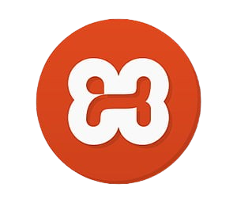

Sobre Mim
Olá! Meu nome é Enzo Semenssi Toniato, tenho 16 anos e nasci na cidade de Pedreira, São Paulo. Há 2 anos, ingressei na rede Sesi e atualmente participo do curso técnico oferecido pelo Senai, com aulas às terças e sextas-feiras. Este portfólio tem como objetivo apresentar meus projetos, interesses pessoais e ideias para o futuro. Mais do que uma simples demonstração de trabalhos, ele representa minha forma de pensar, criar e evoluir. Espero que, ao explorá-lo, você possa conhecer um pouco mais sobre mim e sobre o caminho que estou construindo.
Desenvolvimento de Sistemas - Senai
Aqui se encontra os princípios e aulas sobre a formação de TI. Pretendo continuar neste rumo como base da minha formação acadêmica.
LIMA
Aulas de HTML e CSS
PD
Banco de dados no Xampp
PWPW
JAVASCRIPT e Insomnia
PROJ
Projeto Integrador e Shark Tank
Curso de Química Orgânica
Curso auxiliar indicado pelo professor Luciano.
Curso de Excel e Power BI
Aprendizado voltado para análise de dados, criação de dashboards e automação de relatórios. Ferramentas essenciais para o mercado e gestões analíticas.
Projetos
Shark Tank - Projeto EducaTech Vital.
Acompanhado pelos sistemas de catracas e enfermagem na Escola Sesi. (em desenvolvimento🕐)
Minhas skills
Um pouco sobre meus gostos e minha habilidades do curso.📎
Linguagens de programação
C, JavaScript, HTML, CSS, JSON
Banco de Dados
Xampp - MySQL
Jogos
Os que estou jogando no momento. Se quiser jogar comigo ou me adicionar, segue o #contato para mais informações.

Brawl Stars
Um dos jogos mais divertidos que já joguei! Estratégia, ação e personagens incríveis.
Clash Royale
Jogo estratégico que jogo há mais de 7 anos. Combina cartas, batalhas e muita adrenalina!

Minecraft
O melhor jogo que já joguei até hoje. Criatividade sem limites e memórias inesquecíveis!
Crença
Cristianismo✝️:
Essa é minha visão de enxergar o mundo e a todos de acordo com os ensinamentos de Deus.
Meu futuro
No começo, achava muito difícil aprender programação. Com o tempo, percebi que isso não passava de um estereótipo criado por mim mesmo, com o intuito de me fazer desistir. Após 7 meses no Senai, consegui me estabilizar e pretendo seguir na área de TI, formando assim meu futuro acadêmico.